Aisha Altenhofen
First installed in the living room for the opening.
Reinstalled outside for the finissage.
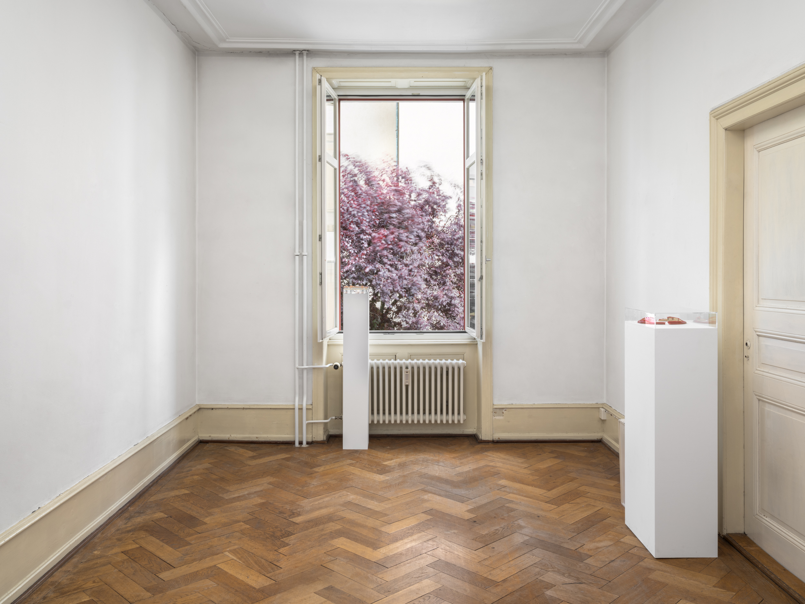
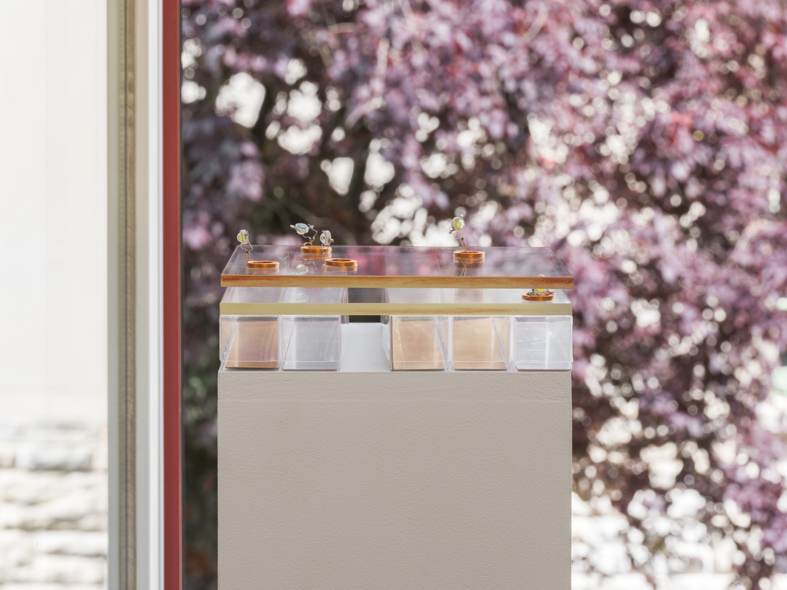
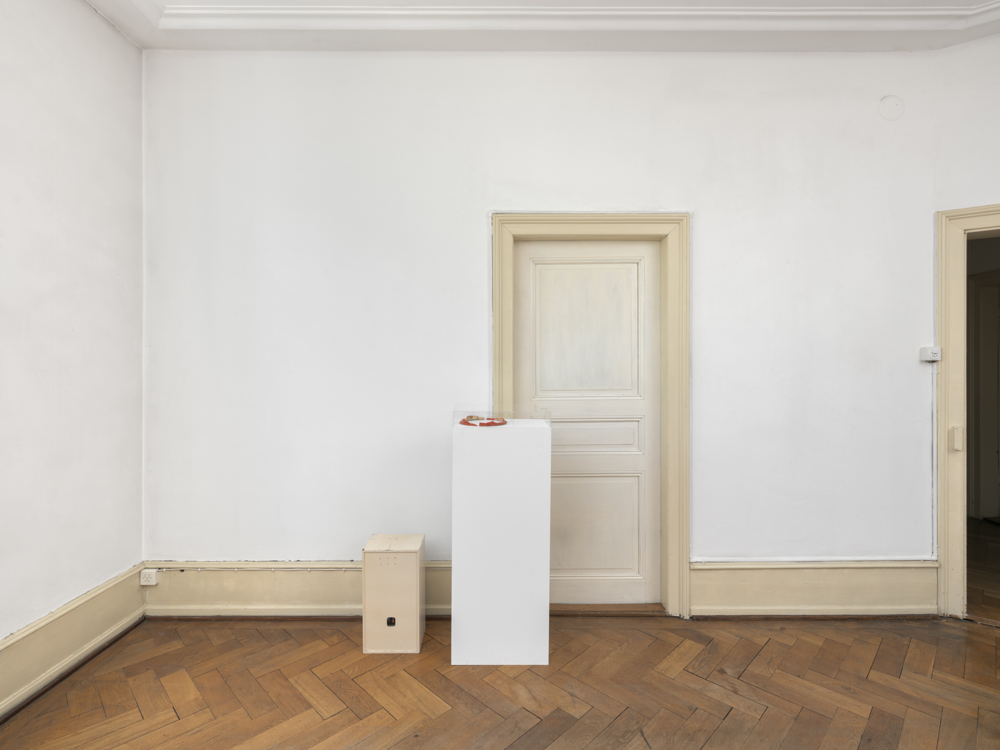
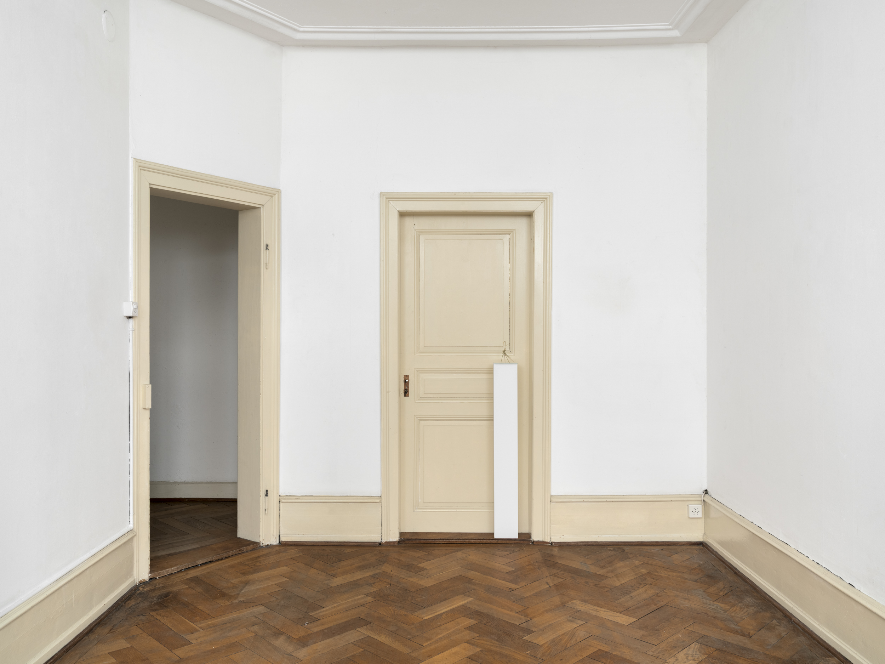
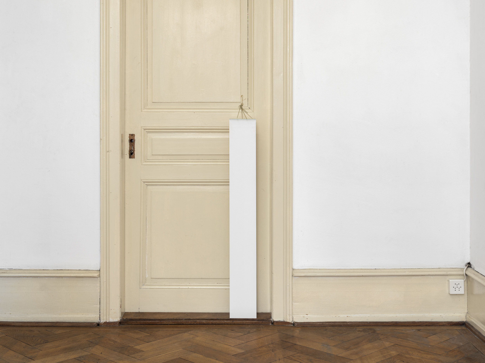
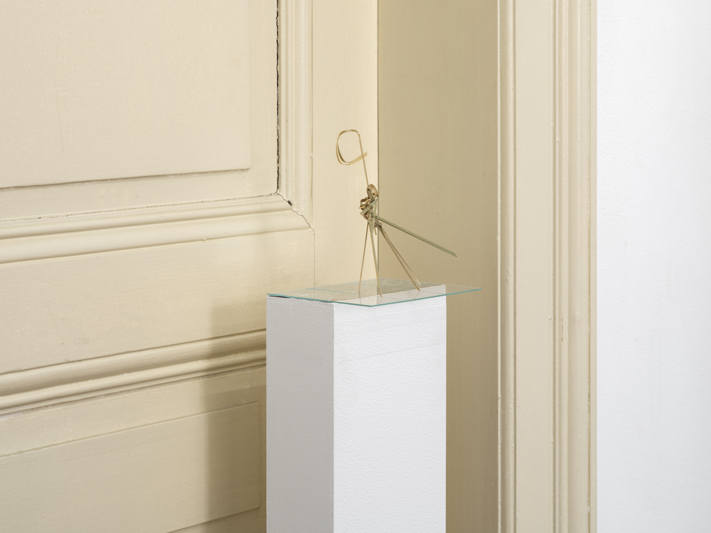
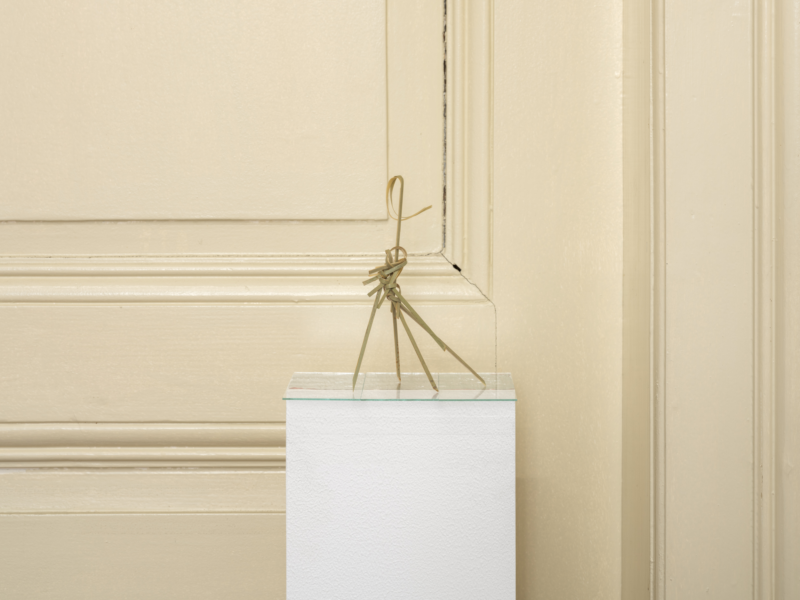
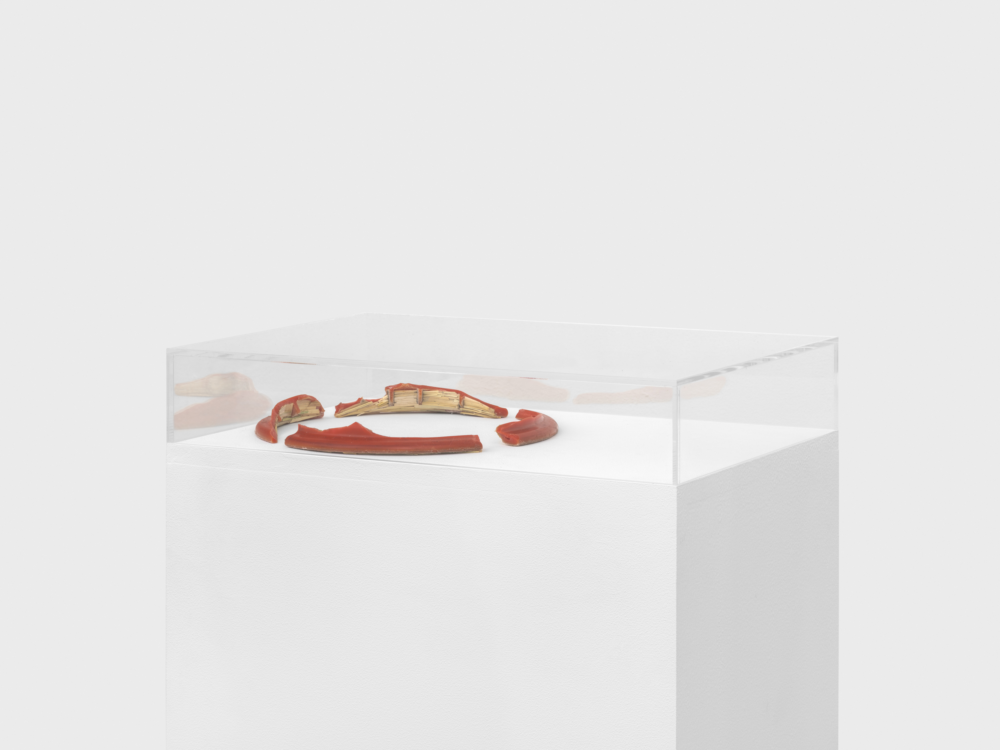
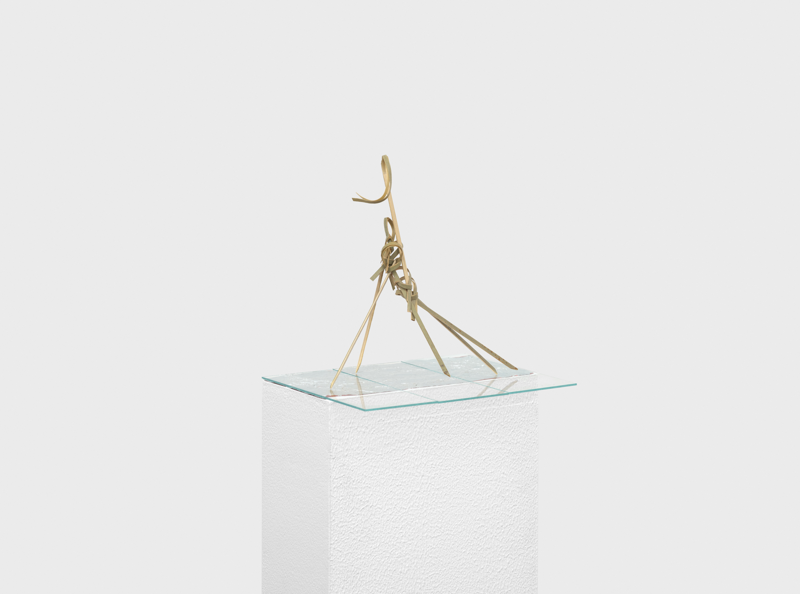
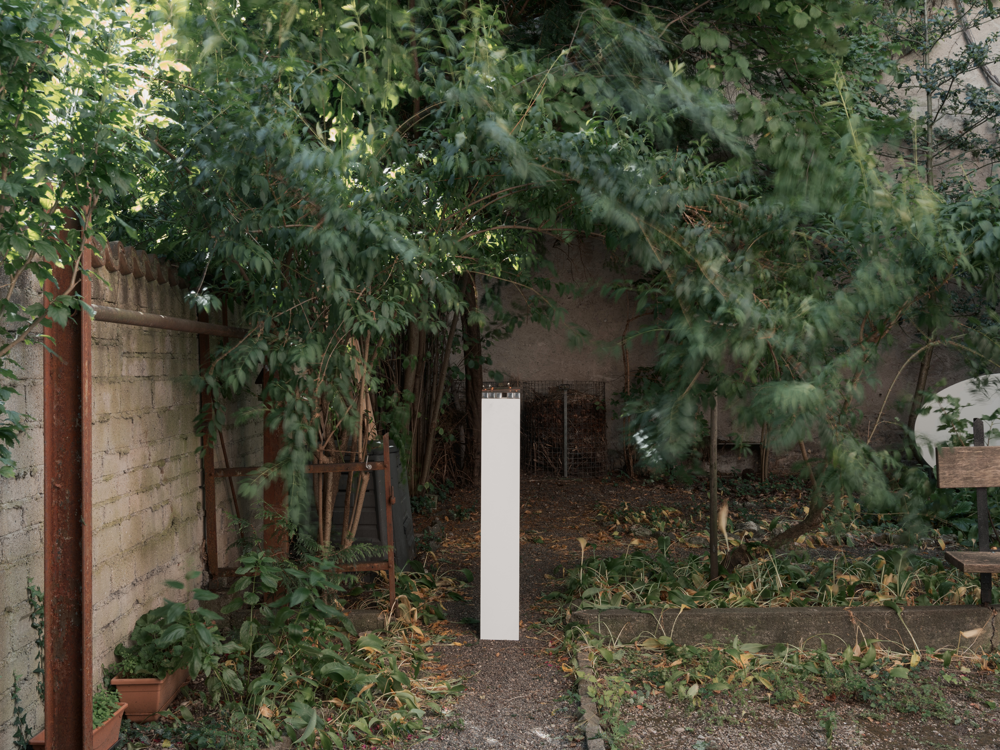
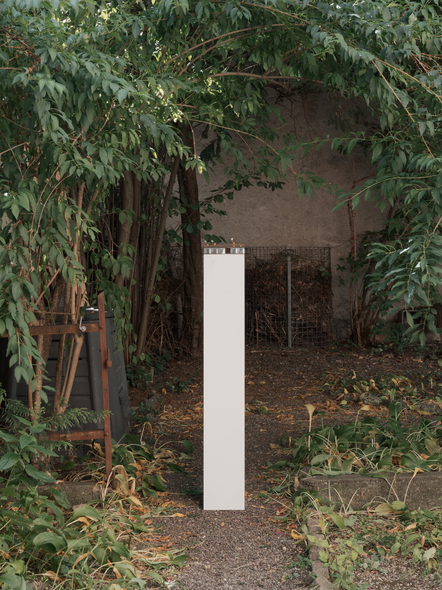
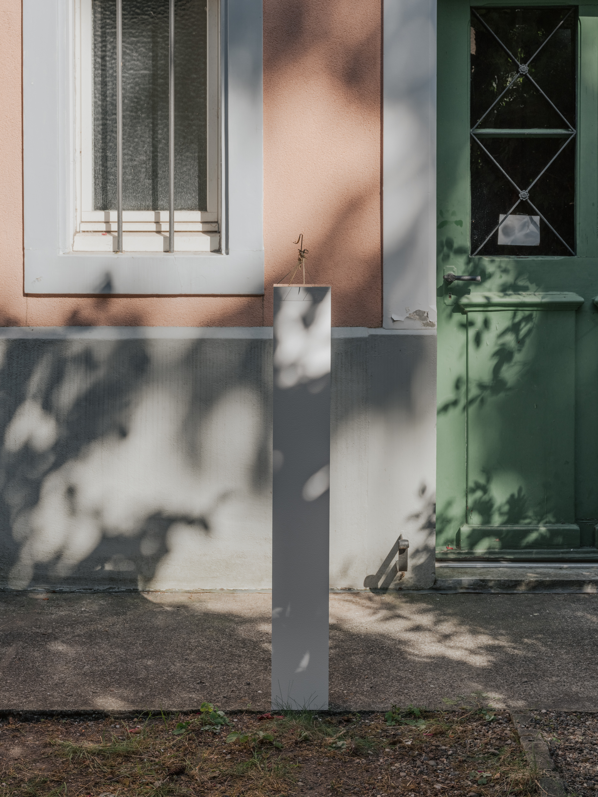
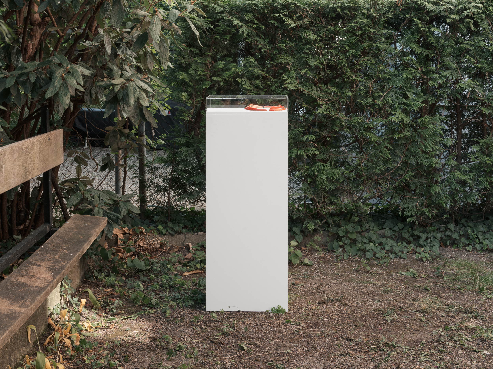
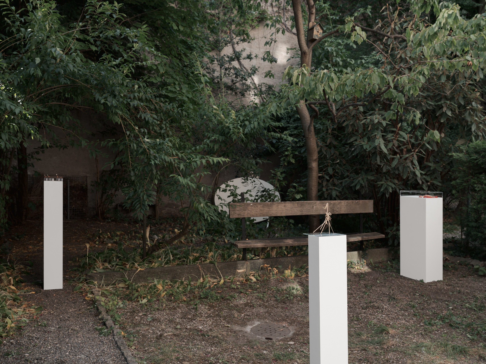
Zero Sole
VIP / self check-out / John Reed / +41
ENTRY #001
Room: The Porch
Status: Available
Last cleaned: 19.08.26
Entry type: Walkthrough
Witnesses: The Flux, FleshCut
Around 10AM almost no one bothers to sit on the 48-meter sculpture-bench at Messeplatz. The Flux is already caught in the gate machinery. It’s very, very hot.
All wrist the phone screen over, green light post-QR code, boarding-pass style. Inside the AC runs on economy, Roche-office temperature, the same one employees complain about on Teams to justify a remote day. On the gray carpet bodies lose half a step at the floor plan, first compression of the morning, before redistributing through the openings. A couple becomes wall where a passage splits, two people edge around them sideways. A Zurich notary drops his phone in front of his wife, an Italian dealer gets interrupted mid-small talk by another, a German publisher refuses a tote bag.
FleshCut scans the crowd, picks out the men already looking at him. At this distance silhouettes still hold easily in a few pieces of information: haircut, build, height, posture. He puts his Wayfarers back on, once again worn by a cluster of Parisian fags in their thirties after ten years of oblivion. They now wear straight-leg jeans, watches with dials, Agnès B. snap-button cardigans — gray wool or black cotton, one size down to mold their torsos. A kind of hostile takeover of the Hedi Slimane twink from back when they still got free entry to saunas.
À 10AM presque personne ne s’assoit sur les quarante-huit mètres de banc de Messeplatz. The Flux est déjà pris dans la machine des portiques. Il fait très, très chaud.
Tous du poignet renverse l’écran de téléphone, lumière verte post QR-code façon boarding pass. À l’intérieur l’AC tourne à l’économie, température bureaux Roche dont les employés se plaignent sur Teams pour justifier un jour remote. Sur la moquette grise les corps perdent un demi-pas devant le floor plan, première compression du matin, avant de se redistribuer entre les ouvertures. Un couple fait cimaise là où un passage se divise, deux personnes les contournent de profil. Un notaire zurichois fait tomber son téléphone devant sa femme, un dealer italien se fait interrompre dans son small talk par un autre, un éditeur allemand refuse un tote bag.
FleshCut scanne la foule, repère les hommes qui le regardent déjà. À cette distance les silhouettes tiennent encore facilement en quelques informations: coupe, carrure, taille, posture. Il remet ses Wayfarer, de nouveau portées par un cluster de pd parisiens dans leur trentaine après dix ans d’oblivion. Ils portent désormais jeans droits, montres à cadran, cardigan à boutons-pression Agnès B. — laine grise ou coton noir, une taille en dessous pour mouler leurs torses. Une sorte de hostile takeover du Hedi Slimane twink, du temps où ils avaient encore l’entrée gratuite au sauna.
ENTRY #001 / CONT.
Witnesses: The Vitrine, The Profile, The Holder, FleshCutThe white partitions cut the ring into almost identical asymmetries: wide passages narrowing without warning to the width of one person, sometimes one shoulder, wall against wall, brushed aluminum at the joints picked out with gray tape; gray white aluminum monochromes repeated until directions become interchangeable, booth numbers, same black sans serif, same spots in the technical ceiling, metal grid, black cables bundled with plastic ties; each booth absorbs a body through an opening and spits it back out ten meters later into another angle of the same thing, identical carpet dulling the step, booth, wall, booth; storage lockers in the blind spot of a stand, door left ajar onto boxes, a man crouched in front, badge flipped over on his shirt. By noon the ring will have consumed enough trajectories, detours, reappearances and small obstructions to eat the day before anyone has eaten.
By the second glass the champagne has dried sticky on FleshCut’s fingers as he looks for somewhere to put it cutting through a Viennese gallery, landing directly on—
The Vitrine, blazer pulling slightly under the arms, finishes a sentence with the word “plan” when he sees Wayfarers, black pants, enter his booth. The Profile follows his eyes. Between his flank and the seated knees of The Holder remains exactly one body’s width. The Holder looks up just after the other two, recognizes, classifies. He remembers putting his hand on his head, precisely the way a nineteen-year-old head lets itself be directed differently from a twenty-nine-year-old one. Now: a few centimeters of resistance gained in every direction. Registers the difference without displeasure or regret before returning to the flight calendar. Anafi, population three hundred and ten at the last census, no airport, the crossing from Santorini takes fifty minutes by fast ferry.
FleshCut sees them half a second too late. He could still turn back out but any detour now would read as a gesture.
Two standing, one seated.
That arrangement…
Maybe it had been an after in the apartment a creative director kept near Buttes-Chaumont. They had ended up five or six, a few hours in a narrow bedroom: silver iPhone 5S fallen through an Akari lamp, couch facing the bed, toilet paper on three Purple, kitchen visible from the bedroom. The Vitrine certain. The Holder probably. The Profile impossible to confirm.
The last word “plan” stays a little too long in The Vitrine’s mouth. Between two buttons his shirt works horizontally against the push of his torso; he tucks his chin without noticing, enough to fold the skin once beneath the jaw. FleshCut looks up from a wall label at the exact moment he realizes he has stopped in front of a wall label. The Profile drops from Wayfarers to glass then back up to face. The Holder moves only his eyes. FleshCut takes the same route in reverse: Holder, Profile, Vitrine, three points connected without displacement. The dry sugar cracks in the joint of his index finger as he transfers the flute to the other hand.
Nearby: …in diesen scheiß Wohnungen, alles nur Glas.
A smile starts at the corner of The Profile’s mouth, too little to show teeth, stops there. The Vitrine breathes in through his nose. FleshCut completes the step already underway.
Ja genau.
Reflux of perfume in the insufficient AC, lukewarm San Pellegrino, damp cotton between the shoulder blades. FleshCut passes close enough to make out one black hair caught in sweat just above the ear, glass held low against the thigh, then the wall cuts the three bodies. Behind him someone picks the conversation back up. A minute or two later, the partition he had taken to avoid them brings him almost exactly back to them.
Les cloisons blanches découpent l’anneau en asymétries presque identiques: grands passages qui se resserrent sans prévenir jusqu’à la largeur d’un individu, parfois d’une épaule, cimaise contre cimaise, alu brossé aux jointures relevées de scotch gris; monochromes gris blanc alu répétés jusqu'à rendre les directions interchangeables, numéros de stand, même sans-sérif noire, mêmes spots au plafond technique, grille métallique, câbles noirs regroupés par colliers de plastique; chaque booth absorbe un corps par une ouverture et le recrache dix mètres plus loin dans un autre angle de la même chose, moquette identique amortissant le pas, cabine, cimaise, cabine; casiers de rangement dans l'angle mort d'un stand, porte entrouverte sur des cartons, un homme accroupi devant, badge retourné sur sa chemise. Avant midi, l’anneau aura consommé assez de trajectoires, détours, réapparitions et petites obstructions pour manger la journée avant que personne n’ait mangé.
Au deuxième verre le champagne a séché collant sur les doigts de FleshCut quand il cherche à le poser coupant par une galerie viennoise, tombant directement sur—
The Vitrine, blazer tirant légèrement sous les aisselles, termine plus lentement une phrase sur “plan” en voyant entrer dans son booth Wayfarer, pantalon noir. The Profile suit ses yeux. Entre son flanc et les genoux The Holder assis reste exactement la largeur d’un corps. Ce dernier lève le regard juste après les deux autres, reconnaît, classifie. Il se souvient d’avoir posé sa main sur sa tête, précisément à la façon dont une tête de dix-neuf ans se laisse diriger différemment d’une de vingt-neuf. Maintenant: quelques centimètres de résistance gagnés dans chaque direction. Note l’écart sans déplaisir ni regret avant de revenir au calendrier de vols. Anafi, trois cent dix habitants au dernier recensement, aucun aéroport, la traversée depuis Santorin prend cinquante minutes en ferry rapide.
FleshCut les voit une demi-seconde trop tard. Il pourrait encore ressortir mais tout détour maintenant se lirait comme un geste.
Deux debout, un assis.
Cette disposition-là…
C’était peut-être un after dans l’appartement qu’un creative director gardait près des Buttes-Chaumont. Ils avaient fini à cinq ou six, quelques heures dans une chambre étroite: iPhone 5S silver tombé à travers une lampe Akari, canapé face au lit, papier toilette sur trois Purple, cuisine visible depuis la chambre. The Vitrine certain. The Holder probablement. The Profile impossible à confirmer.
Le dernier mot “plan” reste un peu trop longtemps dans la bouche de The Vitrine. Entre deux boutons sa chemise travaille horizontalement sous la poussée du torse; il rentre inconsciemment le menton, assez pour plier la peau une fois sous la mâchoire. FleshCut relève les yeux d’un cartel au même moment qu’il réalise s’être arrêté devant un cartel. The Profile descend de Wayfarer au verre puis remonte au visage. The Holder ne déplace plus que les yeux. FleshCut reprend le même trajet en sens inverse: Holder, Profile, Vitrine, trois points reliés sans déplacement. Le sucre sec casse dans la jointure de l’index quand il transfère la flûte dans l’autre main.
Derrière eux: …in diesen scheiß Wohnungen, alles nur Glas.
Un sourire commence au coin de la bouche de The Profile, trop peu pour montrer les dents, s’arrête là. The Vitrine inspire par le nez. FleshCut finalise le pas entamé.
Ja genau.
Reflux de parfum dans l’AC insuffisante, San Pellegrino tiède, coton humide entre les omoplates. FleshCut passe assez près pour distinguer un poil noir collé dans la sueur juste au-dessus de l’oreille, verre tenu bas contre la cuisse, puis la cimaise coupe les trois corps. Derrière lui quelqu’un reprend la conversation. Une ou deux minutes plus tard, la cloison qu’il avait prise pour les éviter le ramène presque exactement sur eux.
ENTRY #001 / CONT.
Witnesses: The American Buyer, FleshCutFour flutes later The American Buyer finally pisses, for a long time, stall door held with the tip of a flat shoe, relieved enough to lose for a few seconds the list of Swiss artists someone is keeping for her outside. The stream drops in stages, starts again twice, paper, flush. At the sinks the young man next to her watches stories, volume on. In the rectangle: torso in a Speedo, rocks on the Rhine, five people around a table under direct flash. She recognizes the restaurant from the night before. The profile too: always at dinner, rarely on the seating plan. Two pumps of soap. He pinches the screen until the body comes out of its box — skin, mouth, bulge — then puts it back into the grid of the feed. The American Buyer rinses her hands. In the mirror: black glasses, black pants, thin silhouette. The silk is torn high enough on the calf for her to hesitate between emerging artist and art student. At thirty centimeters in the phone, doubled farther back. She moves from one to the other without turning her head. He doesn’t see her. She takes three paper towels, uses two, leaves the third dry in her hand all the way to the door.
Quatre flûtes plus tard The American Buyer pisse enfin, longtemps, porte de cabine maintenue du bout d’une chaussure plate, assez soulagée pour perdre quelques secondes la liste d’artistes suisses que quelqu’un garde pour elle dehors. Le jet baisse par paliers, repart deux fois, papier, chasse. Aux lavabos le jeune homme d’à côté regarde des stories avec le son. Dans le rectangle: torse brun en Speedo, rochers du Rhin, cinq personnes autour d’une table au flash frontal. Elle reconnaît le restaurant de la veille. Le profil aussi: toujours au dîner, rarement sur le seating plan. Deux doses de savon. Il pince l’écran jusqu’à sortir le corps de sa case — peau, bouche, bulge — puis le remet dans la grille du feed. The American Buyer rince ses mains. Dans le miroir: lunettes noires, pantalon noir, silhouette maigre. La soie est déchirée assez haute sur le mollet pour qu’elle hésite entre artiste émergent et art student. À trente centimètres dans le téléphone, redoublé plus loin. Elle passe de l’un à l’autre sans tourner la tête. Il ne la voit pas. Elle prend trois feuilles de papier, en utilise deux, laisse la troisième sèche dans sa main jusqu’à la porte.
ENTRY #001 / CONT.
Witnesses: The cashier, The Scab, FleshCutAt the back of Coop Claraplatz the fridges touch in a stable cold. Anthracite stone tiles, discreet cameras, black baskets stacked into their own shape. Circulation is almost obscenely easy.
The cashier often starts customers at the feet since a TikTok account taught him to spot fake TNs by the shape of the bubble. Two beige masses along the drinks aisle glide toward the self-checkout. Reframe higher, onto the hands. Pretzel + Vitamin Water Reloaded. Beep. THIS GUY IS BAREFOOT. Something still resists around the toes: an edge too even, skin that doesn’t change color. Beep. Beep. At the knees the silk has taken an almost liquid fold, at the calf the fraying falls back over it and closes the illusion.
FleshCut brings the phone close.
[4:17 PM]
Red.
Again, tilts.
Green.
Through the glass reflections cut FleshCut at the knees, cars then tram then legs, his body entering and leaving the glass. The feet remain.
Automatic opening.
The cool holds on the skin another two-three seconds. Reloaded open, pretzel folded against the palm. All the heat rises off the asphalt. Ahead of him a man drags himself closer, yellowed, stained, material of the legs ending directly in feet.
Six meters.
Their eyes drop almost together.
Same axis, reverse flow.
Pants ending badly.
Flesh.
Ground.
Four meters.
A thick scab eats across the top, brown edge darker than the center; The Scab’s heels are blackened, lines of skin filled with dust. On FleshCut the flesh stays even all the way over the shape of the toes, five clean volumes, the expensive calm of something that has not yet undergone any friction.
Three meters.
balenciaga's 3D molded 'zero' shoes make wearers feel barefoot
The Scab’s gaze climbs quickly to the pants, the face, drops again.
FleshCut does: face, clothes, leg, (x2) feet.
Two.
The Scab sees the shoe appear.
The Zero Sole finally takes on its thickness; defines a beige edge under the toes. Only a few millimeters between sole and pavement, enough to transmit every irregularity. On the other foot no membrane. Skin directly on mineral, heat of the ground caught in the callus, dust in the folds.
One meter.
They pass against each other. FleshCut barely shifts. For one second their feet take weight on two neighboring slabs. His feet bend precisely at the toe joints, rubber following the movement with enough fidelity to keep making the shoe seem absent. The other takes the ground without translation.
The resemblance is over.
FleshCut drinks.
The pavement continues beneath his feet with exactly the amount of contact he paid for.
Au fond de la Coop-Claraplatz les frigos se touchent d’un froid stable. Dalles de pierre anthracite, caméras discrètes, paniers noirs empilés dans leur propre forme. La circulation est presque obscène de facilité.
Le caissier commence souvent les clients par les pieds depuis qu’un compte TikTok lui a appris à repérer les fausses TN à la forme de la bulle. Deux masses beige le long du rayon boissons glissent vers le self check-out. Recadrage plus haut sur les mains. Pretzel + Vitamin Water Reloaded. Bip. CE MEC EST PIEDS NUS. Quelque chose pourtant résiste au niveau des orteils: un bord trop égal, peau qui ne change pas de couleur. Bip. Bip. Aux genoux la soie a pris un pli presque liquide, au mollet l’effilochage retombe dessus et referme l’illusion.
FleshCut approche le téléphone.
[16:17]
Rouge.
Reprend, incline.
Vert.
À travers la vitre les reflets coupent FleshCut aux genoux, voitures puis tram puis jambes, son corps entre et sort du verre. Les pieds restent.
Ouverture automatique.
Le frais tient encore deux-trois secondes sur la peau. Reloaded ouvert, pretzel plié contre la paume. Toute la chaleur remonte du bitume. Devant lui un homme se traîne dans sa direction, jauni, taché, matière des jambes qui finit directement en pieds.
Six mètres.
Ils baissent les yeux presque ensemble.
Même axe, sens inverse.
Pantalon qui finit mal.
Chair.
Sol.
Quatre mètres.
Une croûte épaisse mange le dessus, bord brun plus sombre que le centre; The Scab a les talons noircis, lignes de peau remplies de poussière. Sur FleshCut la chair reste égale jusque sur la forme des doigts, cinq volumes propres, le calme coûteux de ce qui n’a encore subi aucun frottement.
Trois mètres.
balenciaga's 3D molded 'zero' shoes make wearers feel barefoot
The Scab du regard remonte rapidement jusqu’au pantalon, au visage, redescend.
FleshCut fait: visage, vêtements, jambe, (x2) pieds.
Deux.
The Scab voit la chaussure apparaître.
La Zero Sole prend enfin son épaisseur; la semelle précise un bord beige sous les orteils. Quelques millimètres seulement entre plante et trottoir, assez pour transmettre chaque irrégularité. Sur l’autre pied aucune membrane. Peau directement sur minéral, chaleur du sol prise dans la corne, poussière dans les plis.
Un mètre.
Ils passent l’un contre l’autre. FleshCut se décale à peine. Pendant une seconde leurs pieds prennent appui sur deux dalles voisines. Les siens plient précisément à l’articulation des orteils, caoutchouc suivant le mouvement avec suffisamment de fidélité pour continuer à faire croire à l’absence de chaussure. L’autre prend le sol sans traduction.
La ressemblance est finie.
FleshCut boit.
Le trottoir continue sous ses pieds avec exactement la quantité de contact pour laquelle il a payé.
ENTRY #001 / CONT.
Witnesses: The Flux, FleshCutAfter the nap, a shower, a change of clothes. The phone has stayed at 11% the whole time, ten centimeters from the cable. FleshCut plugs in, watches 11 stay 11. 12. Waits another minute, unplugs and leaves.
On the outskirts the garden squeezes a hangar that has long exceeded its nominal capacity. Gravel, sheet metal, black tarp, cables caught in two trees, industrial door held open, its usable section nevertheless completely blocked. Not enough distance left to reconstruct a whole person. Shoulder before face. Nape before name. Earlobe, reddened cartilage, down along the edge of an ear, frame edge caught in a temple. Gazes no longer reach the eyes: they land in the jaw, the neck, the hairline. A mouth laughs directly against a stranger’s cheek. Glass vertical between two sternums, the only position where it won’t spill. Inside the hangar perforated from within, bodies face to face close a section of passage. Another attacks at an angle, stomach hollowed, pelvis offset, gains X centimeters in front, loses them immediately. Hand on unknown waist, minimal pressure, displacement obtained, immediate withdrawal. Chest in, shoulder turns, elbow up, cigarette toward the ceiling — only continuous clearance above the heads. Smoke in the upper stratum, stagnation under sheet metal, extraction somewhere. Outside, some on benches have their knees nested into the gaps left by standing legs. Shoes caught in the gravel. A girl crosses, glass above her skull, forearm caught between conversations. A man steps back just enough to let someone through, backs into another group, scapular contact, immediate correction. Sorry without eye contact. Palm into lower back. Passage. Closure.
Shoulder.
Hip.
Glass.
Elbow.
Back.
Nothing holds in plan anymore. One body enters, another uses the breach to extract itself. A good line momentarily increases the diameter of the circle. Laugh: + X centimeters. And what are you...? : closure. At face height: perfume, ethanol, cold tobacco, cooked deodorant. Residual air. Damp textile between shoulder blades. Wet sleeve in tangential contact with bare arm. Beard against temple. Hair in mouth. Cold chain on a stranger’s collarbone. A palm looking for the wall meets first wool, then shirt, then back. The Flux turned back on itself. No continuous movement, only local corrections: X centimeters gained at the hip, lost at the elbow; rotation impossible; reverse into sternum; pelvis against pelvis, pure gauge constraint. Cigarettes evacuated upward. Alcohol downward. No general view.
Après la sieste, douche et changement de tenue. Le téléphone est resté à 11% tout ce temps, posé à dix centimètres du câble. FleshCut branche, regarde 11 rester 11. 12. Attend encore une minute, débranche et part.
En périphérie le jardin serre un hangar qui a dépassé sa capacité nominale depuis longtemps. Gravier, tôle, bâche noire, câbles pris dans deux arbres, porte industrielle maintenue ouverte dont la section utile est pourtant entièrement bouchée. Plus assez de recul pour reconstituer une personne entière. Épaule avant visage. Nuque avant nom. Lobe, cartilage rougi, duvet en bordure d’oreille, arête d’une monture prise dans une tempe. Les regards n’atteignent plus les yeux: ils arrivent dans la mâchoire, le cou, la naissance des cheveux. Une bouche rit directement contre une joue étrangère. Verre vertical entre deux sternums, seule position où il ne renverse pas. Dans le hangar perforé du dedans, des corps face à face ferment une section de passage. Un autre attaque de biais, ventre creusé, bassin décalé, gagne X centimètres devant, les perd aussitôt. Main sur taille inconnue, pression minimale, déplacement obtenu, retrait immédiat. Rentre poitrine, tourne épaule, lève coude, aspire cigarette vers le plafond — seul dégagement continu au-dessus des têtes. Fumée dans la strate supérieure, stagnation sous tôle, extraction quelque part. Dehors, certains sur des bancs ont les genoux emboîtés dans les vides laissés par les jambes debout. Chaussures prises dans le gravier. Une fille traverse verre au-dessus du crâne, avant-bras coincé entre des conversations. Un homme recule juste assez pour laisser passer, engage le dos dans un autre groupe, contact scapulaire, correction immédiate. Sorry sans regard. Paume dans lombaires. Passage. Fermeture.
Épaule.
Hanche.
Verre.
Coude.
Dos.
Plus rien ne tient en plan. Un corps entre, un autre profite de la brèche et s’extrait. Une bonne réplique augmente momentanément le diamètre du cercle. Rire: + X centimètres. And what are you...? : fermeture. À hauteur de visage: parfum, éthanol, tabac froid, déodorant cuit. Air résiduel. Textile humide entre omoplates. Manche mouillée en contact tangentiel avec bras nu. Barbe contre tempe. Cheveux dans bouche. Chaîne froide sur clavicule étrangère. Une paume cherchant le mur rencontre d’abord laine, puis chemise, puis dos. The Flux retourné sur lui-même. Plus de déplacement continu, seulement corrections locales: X centimètres gagnés à la hanche, perdus au coude; rotation impossible; marche arrière dans sternum; bassin contre bassin, pure contrainte de gabarit. Cigarettes évacuées vers le haut. Alcool vers le bas. Aucune vue générale.
ENTRY #001 / CONT.
Witnesses: The Vitrine, The Profile, The Holder, FleshCutThe Profile appears in a breach. FleshCut extracts himself from a conversation at the exact moment someone takes his place. Clean substitution. At less than an arm’s length The Profile still holds. Compact under an open shirt over a T-shirt, he trains Xx times a week at John Reed Kreuzberg and has gained Xk guys since his progress pics started landing in the Explore grid.
The Profile asks a name he cites names he knows names. Oh you know X? How did you guys meet? Smiles holds releases. Under his flesh it stores: mostly anecdotes with dates, numbers, loads attached. Mouth opens closes asks. The eyes return to FleshCut’s lips when an answer catches, then slip past him. X with X at X, who now collaborates with X who took over X’s old studio. Yeah, X, ah. Who’s here tonight, who leaves tomorrow, who sleeps where. Name of a project. Who FleshCut came with, where he’s going after.
Guy X passes behind them.
The eyes go to his body.
Return.
BuzzCut X joins him in the corner, then a third.
The mouth stays with FleshCut. The eyes return to the group.
Yeah.
FleshCut again.
Then the corner.
The conversation continues well enough that it can already be left.
The Profile’s hand arrives on FleshCut’s arm, thumb resting on the inside.
A few minutes later, The Profile opens Contacts and hands him his phone.
Put your number
FleshCut fingers:
First name.
+41 XX…
“come outside” [Instagram]
…XXX…
“toilet” [X]
[X and X others liked your post] thumbnail of flesh
…XX XX.
Eye-speaks to someone over FleshCut’s shoulder.
Saved.
The only part of the number FleshCut gets right is the country code.
The Profile pockets phone + smiles.
Two more sentences. A hand settles just above his waistband, immediate rotation.
FleshCut takes the opening.
The Profile apparaît dans une brèche. FleshCut s’extrait d’une conversation au moment exact où quelqu’un prend sa place. Substitution propre. À moins d’un bras The Profile tient encore. Compact sous chemise ouverte sur tshirt, il s’entraîne Xx par semaine au John Reed de Kreuzberg et a gagné Xk de mecs depuis que ses progress pics se retrouvent dans la grille Explore.
The Profile demande un nom il cite des noms il connaît des noms. Oh you know X? How did you guys meet? Sourit maintient relâche. Sous sa chair ça stocke: small talks, peu de visages, surtout des anecdotes par dates, chiffres, loads. Bouche ouvre ferme demande. Les yeux reviennent sur les lèvres de FleshCut quand une réponse accroche, repartent par-dessus son épaule. X avec X chez X, qui collabore maintenant avec X qui a repris l’ancien studio de X. Yeah, X, ah. Qui est là ce soir, qui repart demain, qui dort où. Nom d’un projet. Avec qui FleshCut est venu, où il va après.
Guy X passe derrière eux.
Les yeux partent sur son corps.
Reviennent.
BuzzCut X le rejoint dans l’angle, puis un troisième.
La bouche reste avec FleshCut. Les yeux retournent au groupe.
Yeah.
Encore FleshCut.
Puis l’angle.
La conversation continue assez bien pour qu’on puisse déjà la quitter.
La main de The Profile arrive sur le bras de FleshCut, le pouce posé à l’intérieur.
Quelques minutes après, The Profile ouvre Contact et tend son téléphone.
Put your number
FleshCut des doigts:
Prénom.
+41 XX…
“come outside” [instagram]
…XXX…
“toilet” [X]
[X and X others liked your post] miniature de chair
…XX XX.
Il parle des yeux à quelqu’un au-dessus de son épaule.
Saved.
Le contact enregistré sous FleshCut n’a de correct que l’indicatif pays.
The Profile portable poche + sourire.
Deux phrases encore. Une main se pose juste au-dessus de sa ceinture, rotation immédiate.
FleshCut profite de l’ouverture.
ENTRY #001 / CONT.
Witnesses: The FluxFoot sole beer sticks skin concrete X supports take return retake the load five volumes in less space than five volumes big toe pushes inward small toe against wall no new space only redistribution wet sock seam leather sole floor pressure friction heat skin thickens then putain not enough anymore separation of superficial epidermal layers clear fluid in the cavity under load flat releases round flat round gross small volume changing shape to keep the large volume standing heel raised set raised empty loafer under bench keeps the warm hollow of the removed foot negative form someone steps on it two forms inside the same form flash grain of gravel under sock X millimeters enough foot turns knee corrects hip follows small point large volume one toe under another nail into flesh counterform against skin too many bodies for the envelope the foot knows exactly where it hurts localized pressure nerve signal intact climbs climbs putain arrives X seconds too late X support X load XX skin X bone XX inside XXX receives X gives XX holds X slips
Pied semelle bière colle peau béton X appuis prennent rendent reprennent la charge cinq volumes dans moins de place que cinq volumes gros orteil pousse dedans petit contre paroi pas de place nouvelle seulement redistribution chaussette humide couture cuir semelle sol pression frottement chaleur la peau épaissit puis fuck ne suffit plus séparation des couches superficielles de l’épiderme liquide clair dans la cavité sous charge plate relâche ronde plate ronde crade petit volume qui change de forme pour garder le grand volume debout talon levé posé levé mocassin vide sous banc garde le creux chaud du pied retiré forme négative quelqu’un marche sur deux formes dans la même forme flash grain de gravier sous chaussette X millimètres suffit pied tourne genou corrige hanche suit petit point grand volume un orteil sous un autre ongle dans chair contreforme contre peau trop de corps pour l’enveloppe le pied sait exactement où ça fuck pression localisée signal nerveux intact remonte remonte fuck arrive X secondes trop tard X appui X charge XX peau X os XX dedans XXX reçoit X rend XX tient X glisse